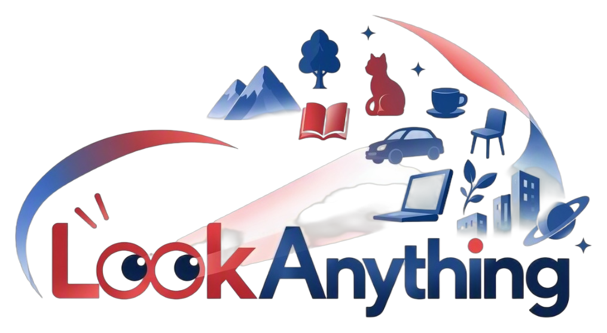

LookAnything: A Foundation Model for Holistic Gaze Following
Bridging low-level 2D point regression and open-ended social scene reasoning — unifying flexible multimodal prompts, bidirectional gaze grounding, 3D spatial awareness, and answerability verification in a single 2B model.
Video playback failed. Please reload or open assets/videos/hero.mp4 directly.
Live Real-World Evaluation: Deployed directly on a Unitree G1 humanoid robot across cluttered retail aisles, multi-person social interactions, and dynamic tabletop manipulation, LookAnything handles arbitrary visual/text prompts and predicts points, boxes, heatmaps, and semantic answers from a single unified model.
From Narrow 2D Point Regression to Holistic Gaze Understanding
Embodied agents operating alongside humans must interpret attention flexibly in 3D physical space rather than merely mapping a pre-cropped head box to a 2D pixel.
Gaze following, which infers where a person is looking in a scene, is a fundamental cue for nonverbal human communication and human-robot interaction. However, existing methods remain constrained by rigid head-bounding-box prompts and single 2D point outputs, limiting their applicability in open-ended, interactive scenarios. Meanwhile, current vision-language models (VLMs) struggle with 3D spatial reasoning and gaze target grounding due to the lack of fine-grained geometric awareness and comprehensive supervision. To bridge this gap, we formulate Holistic Gaze Following, unifying flexible multimodal prompting with comprehensive gaze reasoning across target, source, spatial, social, and answerability dimensions. To power this paradigm, we construct HoliGaze via an automated multi-stage data engine, yielding a large-scale dataset of 311K Q&A pairs across nine distinct tasks alongside a rigorously human-verified evaluation benchmark, HoliGaze-Bench. Building upon this foundation, we propose LookAnything, an end-to-end gaze foundation model that injects explicit geometric priors via learnable scene depth, source head, and target spatial queries. Furthermore, we design a structurally disentangled block-wise attention mask that enforces causal reasoning from global scene geometry and source cues to target representations while preventing spurious cross-stream interference. Extensive experiments demonstrate that LookAnything outperforms 33 open-source and proprietary VLMs on HoliGaze-Bench while achieving state-of-the-art performance on conventional gaze-following benchmarks, strong zero-shot generalization on out-of-distribution domains, and robust real-world deployment on a humanoid robot.
Holistic Paradigm & HoliGaze
Formulates Holistic Gaze Following across 5 capability dimensions and 9 tasks, supported by an automated 4-stage data engine producing 311K Q&A pairs and the human-verified HoliGaze-Bench (4,949 pairs).
Explicit Geometric Query Injection
Introduces learnable scene depth (Qd), source head (Qh), and target spatial (Qg) queries coupled with a structurally disentangled block-wise attention mask for causal 3D line-of-sight reasoning.
Unified SOTA & Humanoid Deployment
Surpasses 33 general-purpose, embodied, and proprietary VLMs with only 2B parameters, matches or beats task-specific specialists on 5 conventional benchmarks, transfers zero-shot to OOD domains, and runs on a Unitree G1 robot.
311K Multi-Task Q&A Pairs Across Five Capability Dimensions
Constructed from 120K diverse images across GazeFollow, VAT, ChildPlay, GazeHOI, and GOO-Real via a unified four-stage annotation and verification pipeline.
GTL, GTD),
Source (GSL, GSD),
Spatial (GDO, GDR),
Social (GCD), and
Answerability (ARR, PV).
Schema Unifying
Standardizes GazeFollow, VAT, ChildPlay, GazeHOI, and GOO-Real into a unified JSON schema indexing observer head boxes, 2D gaze points, and in/out-of-frame flags.
Annotation Completion
Enriches scenes with SAM3 target masks/boxes, Depth Anything v3 metric depth maps, and Gemini referring expressions with ambiguity flags.
Multi-Task Q&A Synthesis
Instantiates 306,496 training Q&A pairs and 4,949 test pairs across openQA and MCQ formats, including unanswerable out-of-frame and ambiguous queries.
Human Verification
Every sample in HoliGaze-Bench is audited by human annotators, yielding only a 0.70% modification/removal rate and high-fidelity ground truth.
HoliGaze-Bench Task Distribution
Stratified across 4,949 human-verified Q&A pairs covering open-ended grounding, description, 3D spatial MCQs, and refusal verification.
| Dataset | Data Profile | Ref. Mode | Output Modality | Supported Q&A Capabilities | ||||||||||
|---|---|---|---|---|---|---|---|---|---|---|---|---|---|---|
| Scenes | Scale | Visual | Text | Point | Box | Mask | Text | Target | Source | Depth | Dir. | Contact | Refusal | |
| GazeFollow NIPS’15 | General | 122K | ✓ | ✗ | ✓ | ✗ | ✗ | ✗ | ✗ | ✗ | ✗ | ✗ | ✗ | ✗ |
| VideoAttentionTarget CVPR’20 | TV Shows | 164K | ✓ | ✗ | ✓ | ✗ | ✗ | ✗ | ✗ | ✗ | ✗ | ✗ | ✗ | ✗ |
| GOO-Real CVPRW’21 | Retail | 9.6K | ✓ | ✗ | ✓ | ✓ | ✓ | ✗ | ✗ | ✗ | ✗ | ✗ | ✗ | ✗ |
| ChildPlay ICCV’23 | Child-Adult | 258K | ✓ | ✗ | ✓ | ✗ | ✗ | ✗ | ✗ | ✗ | ✗ | ✗ | ✗ | ✗ |
| GazeHOI CVPR’24 | Desktop HOI | 205K | ✓ | ✗ | ✓ | ✓ | ✗ | ✗ | ✗ | ✗ | ✗ | ✗ | ✗ | ✗ |
| Gaze-LLE CVPR’25 | General | 122K | ✓ | ✗ | ✓ | ✗ | ✗ | ✗ | ✗ | ✗ | ✗ | ✗ | ✗ | ✗ |
| InteractVLM CVPR’25 | Social | – | ✗ | ✓ | ✗ | ✗ | ✗ | ✓ | ✓ | ✗ | ✗ | ✗ | ✗ | ✗ |
| GazeVLM arXiv’25 | General | 286K | ✓ | ✓ | ✓ | ✓ | ✗ | ✓ | ✓ | ✓ | ✗ | ✗ | ✗ | ✗ |
| HoliGaze (Ours) | 5 Domains | 311K | ✓ | ✓ | ✓ | ✓ | ✓ | ✓ | ✓ | ✓ | ✓ | ✓ | ✓ | ✓ |
Explicit Geometric Queries & Block-Wise Structured Attention
Built upon Qwen3-VL-2B, LookAnything augments vision-language token streams with dedicated 3D depth, source head, and target spatial latent tokens governed by a causal block-wise attention mask.
Unified Multimodal Sequence & Generation Causal VLM + Latent Queries
X = [V ; P ; Qᵈ ; Qʰ ; Qᵍ ; Y], pθ(Y | I, P, Qᵈ, Qʰ, Qᵍ)
Appends learnable scene depth (Nd=16), source head (Nh=4), and target spatial (Ng=4) queries between multimodal prompt tokens [V; P] and autoregressive response tokens Y.
End-to-End Multi-Task Geometric Supervision Auxiliary Decoders
ℒ_total = ℒ_AR + λ_d ℒ_depth + λ_h ℒ_head + λ_t ℒ_target
Jointly optimizes autoregressive token generation with dense metric depth reconstruction, observer head bounding-box regression, and multi-representation target decoding (heatmap + point + mask/box).
Qd), source head (Qh), and target spatial (Qg)—decoded by lightweight auxiliary geometric heads during training. Top-left: the Structurally Disentangled Block-wise Attention Mask enforces a causal hierarchy from scene depth and observer head geometry to target localization and language generation while blocking cross-stream interference.
Scene Depth Query & DPT Decoder
Extracts holistic 3D scene layout directly from multi-layer visual representations, supervised by scale-aware metric depth maps so line-of-sight projection respects physical occlusions and depth ordering.
Source Head Query & Box Regressor
Explicitly anchors the referred observer’s head location and 3D orientation before target inference, bridging natural-language referring expressions with precise spatial gaze origins.
Target Spatial Query & Multi-Head Decoder
Aggregates scene depth and source head cues to decode dense 2D gaze heatmaps, sub-pixel target coordinates, and attended object masks, grounding downstream openQA and MCQ responses.
Structurally Disentangled Attention
Prevents mutual interference between Qd and Qh, routes both causally into Qg, and exposes the complete geometric chain (Qd → Qh → Qg) to autoregressive response tokens Y.
HoliGaze-Bench Leaderboard & Specialist Benchmarks
Zero-shot and fine-tuned evaluation across 34 models spanning 9 proprietary MLLMs, 14 open general-purpose VLMs, 10 open embodied VLMs, and LookAnything (2B) across all 16 metrics.
Table 2 Notes: Click any metric column header to sort. Green highlight denotes the best score and underlined blue denotes the runner-up among currently displayed models. For GTL-T2P L₂ ↓, lower Euclidean distance is better; for all other 15 metrics, higher is better.
Compare any combination of the 34 evaluated models across Target, Source, 3D Spatial, Social (GCD), and Answerability dimensions.
74% Relative Gain on Open-Ended Grounding
Even the strongest proprietary model (Gemini-3.7-Flash, 0.298 openQA) struggles on fine-grained box grounding (T2B mIoU 0.038 vs. our 0.333) and inverse source localization (GSL mIoU 0.047 vs. our 0.610).
Calibrated Refusal vs. VLM Hallucination
Most open-source general and embodied VLMs score near 0.000 on Ambiguous Reference Recognition (ARR), blindly hallucinating boxes for ill-posed prompts, whereas LookAnything achieves 0.805 ARR F1 and 0.932 PV F1.
Parameter Scale Alone Cannot Solve 3D Gaze
Scaling open VLMs from 2B to 38B yields diminishing returns on 3D gaze geometry without explicit spatial priors. With only 2B parameters, LookAnything outperforms 27B–38B open models across every task.
State-of-the-Art on Five Conventional Gaze-Following Benchmarks
Evaluated with a single unified checkpoint against dedicated gaze-following specialists across GazeFollow, VideoAttentionTarget (VAT), ChildPlay, GazeHOI, and GOO-Real (Table 3).
| Method | VAT | GazeFollow | ChildPlay | GazeHOI | GOO-Real | ||||||
|---|---|---|---|---|---|---|---|---|---|---|---|
| L₂ ↓ | AP ↑ | Avg.L₂ ↓ | Min.L₂ ↓ | L₂ ↓ | AP ↑ | L₂ ↓ | AP ↑ | L₂ ↓ | AP ↑ | mIoU ↑ | |
| Chong et al. CVPR’20 | 0.147 | 0.854 | 0.137 | 0.077 | 0.142 | 0.944 | – | – | – | – | – |
| Gupta et al. CVPR’22 | 0.134 | 0.881 | 0.133 | 0.073 | 0.113 | 0.983 | – | – | – | – | – |
| Tafasca et al. ICCV’23 | 0.109 | 0.939 | 0.125 | 0.064 | 0.107 | 0.986 | – | – | – | – | – |
| ViTGaze ICCV’23 | 0.119 | 0.910 | 0.121 | 0.061 | – | – | – | – | – | – | – |
| Gaze-LLE (ViT-B) CVPR’25 | 0.109 | 0.927 | 0.105 | 0.046 | 0.097 | 0.992 | 0.088 | 0.831 | 0.082 | 0.958 | – |
| Gaze-LLE (ViT-L) CVPR’25 | 0.103 | 0.933 | 0.099 | 0.041 | 0.092 | 0.994 | 0.084 | 0.825 | 0.075 | 0.974 | – |
| GazeVLM arXiv’25 | 0.116 | 0.941 | 0.109 | 0.049 | – | – | – | – | 0.091 | – | 0.461 |
| LookAnything (2B, Ours) | 0.094 | 0.946 | 0.098 | 0.042 | 0.095 | 0.992 | 0.068 | 0.869 | 0.063 | 0.985 | 0.625 |
Zero-Shot OOD Transfer & Component Verification
Validating out-of-distribution generalization to unseen indoor laser-spot robotics (GFIE) and multi-person operating rooms (4D-OR), alongside systematic architectural ablations.
Table 5 · Zero-Shot Out-of-Distribution Generalization
Evaluated without any target-domain fine-tuning on GFIE (indoor human-robot gaze with ground-truth 3D laser spots) and 4D-OR (complex clinical operating room workflows).
| Method | Params | GFIE (L₂ ↓) | 4D-OR (L₂ ↓) |
|---|---|---|---|
| Gemini-3.7-Flash | – | 0.0994 | 0.129 |
| Qwen3-VL-32B | 32B | 0.2330 | 0.231 |
| Gaze-LLE (ViT-B) | 0.1B | 0.0566 | 0.109 |
| Gaze-LLE (ViT-L) | 0.3B | 0.0510 | 0.094 |
| LookAnything (Ours) | 2B | 0.0464 | 0.076 |
Table 4 · Ablation of Geometric Queries & Structured Mask
Progressively adding scene depth (Qd), source head (Qh), target spatial (Qg) queries, and the block-wise structured mask steadily improves every metric.
| Variant | openQA ↑ | MCQ ↑ | T2P L₂ ↓ | T2B mIoU ↑ | GDO Acc ↑ |
|---|---|---|---|---|---|
| SFT Baseline (Qwen3-VL-2B) | 0.484 | 0.826 | 0.118 | 0.296 | 0.892 |
+ Scene Depth Query (Qd) |
0.495 | 0.838 | 0.109 | 0.308 | 0.914 |
+ Source Head Query (Qd + Qh) |
0.503 | 0.843 | 0.103 | 0.317 | 0.918 |
| + Target Query (Unmasked) | 0.509 | 0.846 | 0.099 | 0.324 | 0.920 |
| Full LookAnything (+ Block Mask) | 0.518 | 0.852 | 0.094 | 0.333 | 0.924 |
Qd sharpens 3D depth orientation, Qh disambiguates observers, and Qg refines fine-grained target localization.
(Nd, Nh, Ng) = (16, 4, 4) achieves the optimal accuracy-efficiency trade-off with negligible inference overhead.
Interactive Real-World Evaluation on Unitree G1
Explore real-world rollouts captured from the humanoid’s egocentric camera across diverse environments, dynamic robot motion, and four output modalities.
1. Diverse Real-World Scenarios
Switch between cluttered retail shelves, multi-person social exchanges, and tabletop manipulation
Could not load this clip.
2. Egocentric Viewpoint Robustness
Comparing stationary observation against active locomotion and head-camera ego-motion
Could not load this clip.
3. Unified Multi-Format Output Modalities
One foundation model flexibly produces points, boxes, dense heatmaps, and natural-language answers
Could not load this clip.
Cite LookAnything
If you find LookAnything or HoliGaze useful in your research, please consider citing our work:
@article{tang2026lookanything,
title = {LookAnything: A Foundation Model for Holistic Gaze Following},
author = {Tang, Jiayu and Zhou, Yuchen and Wu, Hongsheng and Ye, Hanjing and Huang, Ke and Wang, Cheng and Dai, Yuqin and Huang, Yufei and Ling, Yonggen and Gou, Chao},
journal = {arXiv preprint},
year = {2026},
url = {https://look-anything.github.io/}
}